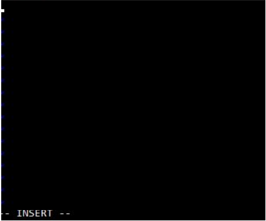

Install Docker Engine
If someone needs to go through the Docker installation, please watch this video.
Key-step: After the installation, you can run “docker run hello-world” to test your installation. Below is a screenshots when run this command successfully on Windows OS.
Pull an Ubuntu image from Dockerhub
Key-step 1: After logging into Docker, you can run “docker pull ubuntu” in your command line window.
Key-step 2: Use “docker images” to check existing Docker images on your computer.
Commit Changes To A Docker Image With Examples
key-step 1: Run the Ubuntu image to start a Docker container, then log into this Ubuntu container: Command: docker run -it ubuntu:latest /bin/bash
The container ID is “1ee65e9d5595” in the screenshot.

Key-step 2: Install applications in this Ubuntu container.
1) Update system using command“apt-get update”.
2) Install apache2 using command“apt-get install apache2”.
3) Install vim text editor using command “apt-get install vim”.
Key-step 3:Exit Ubuntu container using command "exit"
Key-step 4: Commit container to create a new Docker image.
1) Check the container using command “docker ps -a”
2) Create a new Docker image using command “docker commit 1ee65e9d5595 ubuntu-my_apache2”. “1ee65e9d5595” is the container ID and “ubuntu-my_apache2” is the name of a new Docker image.
3) Check the news images using “docker images”.
Share Data Between a Docker Container and Host
Using command “docker run -it -p 127.0.0.1:80:80 -v H:\Docker_tutorial\local_dir:/var/www/html ubuntu-my_apache2 /bin/bash”.
Parameter explanation: 1) -it: log into an interactive shell 2) -p: expose an port of Docker container. 3) -v: bind a host directory to Docker container. “H:\Docker_tutoiral\local_dir” is a directory of the host computer, and “/var/www/htm” is the default location for the entry webpage of a website. Usually we put “index. Html” is this directory.
vi Editor in UNIX
Key step 1: check the present working directory using “pwd” then go the html directory “/var/www/htm” using “cd /var/www/html”
Key step 2: create an “index.html” file using “vi index.html”. Press “i” key to edit the new “index. Html” file. You can see “-- INSERT --” in the bottom of the command window, which means you can type html source code now. Try the shortcuts of vi to edit your file.
After finishing your “index.html” file, press the “ESC” key of your computer then type “:wq” to write the file and then quit vi.
Docker host a website
Key step 1: Start apache service using “/etc/init.d/apache2 restart” in your Docker container.
Using a browser of you host computer to access “127.0.0.1”, then you can see your website!
Click here for a video on how to set up a web server using Docker.